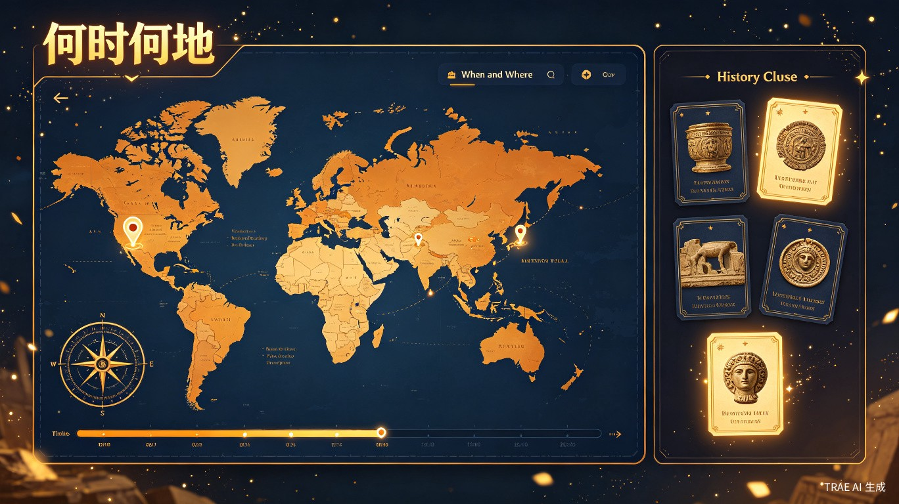
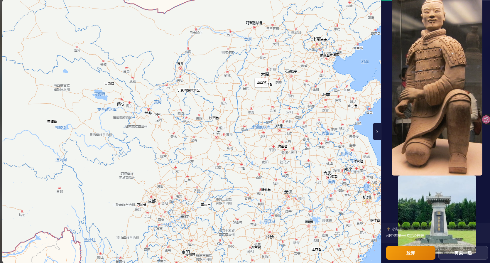
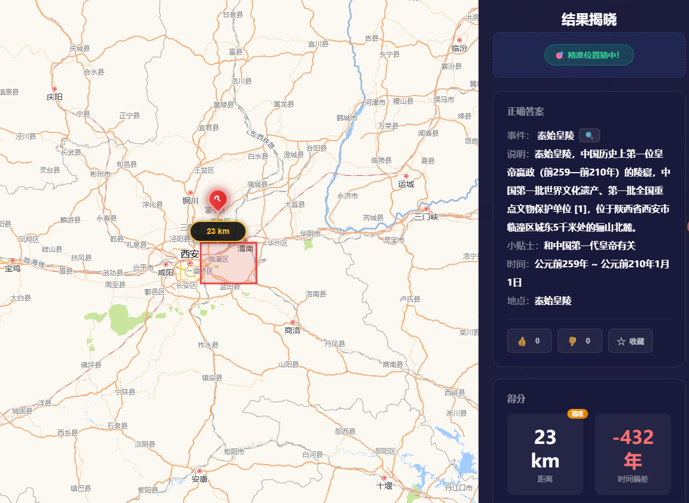
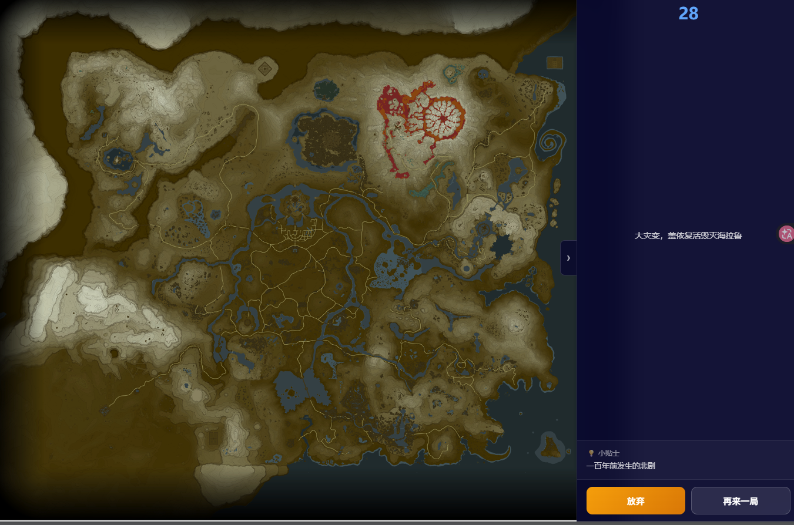
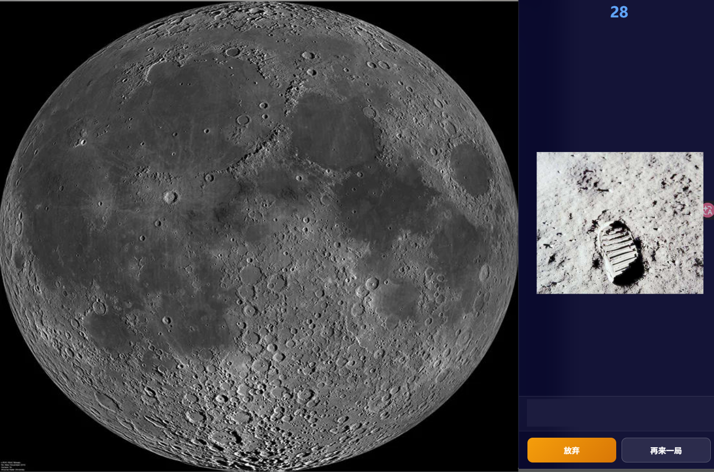
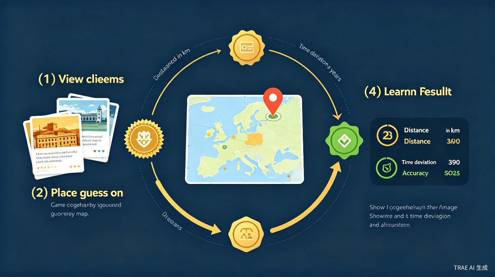
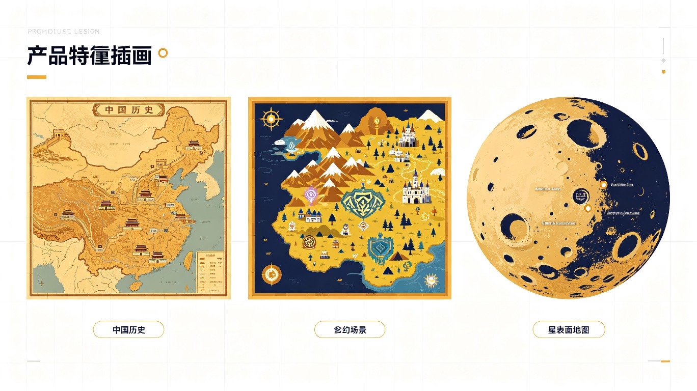
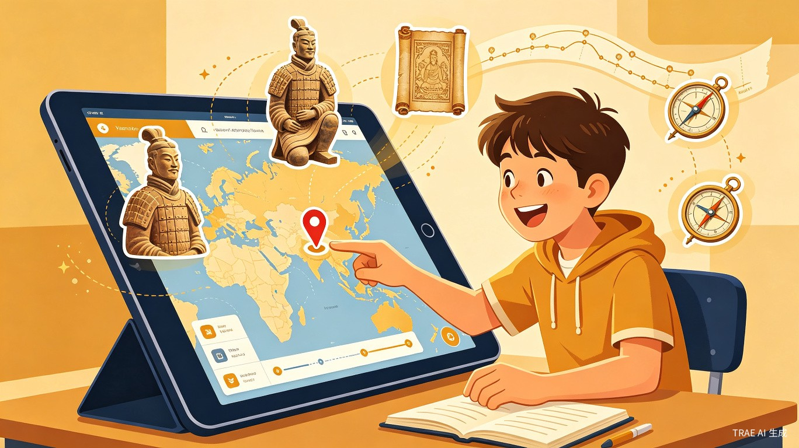
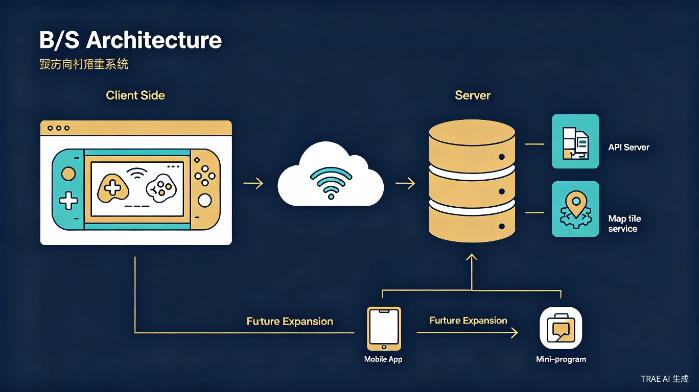
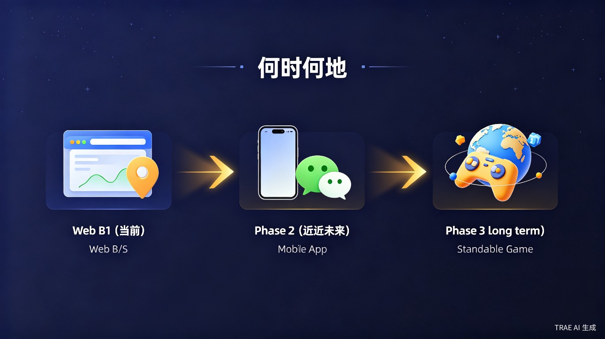

传统历史地理教育存在诸多痛点，学生缺乏直观理解，知识停留在死记硬背层面。我们希望用游戏化方式改变这一切。
学生面对历史事件的时间和地点，只能通过反复背诵来记忆，缺乏直观的空间和时间感知，学习过程枯燥乏味。
历史事件的时间和空间往往是割裂的。学生知道"诸葛亮北伐"，却无法直观理解路线、地形对战略的影响。
现有的历史地理教学工具多为静态展示，缺乏互动效果。用户只是被动接收信息，参与感和趣味性不足。
某些国家通过修改教科书否认历史罪恶。我们需要用全球化的文化产品传播正确的历史观，让事实无法被掩盖。
"何时何地"是一款类似 GeoGuessr 的历史地理猜测游戏，玩家通过逐步揭开的图文提示、音频、视频，在限时情况下猜测事件发生的地点和年代。

每局游戏中，系统会给出一系列与某个历史事件相关的线索——可能是兵马俑的照片、一段古诗、或者阿波罗登月的音频片段。玩家需要在地图上标记自己认为的事件发生地点，并猜测事件发生的年代。
已有大量研究证明，游戏化学习尤其是可视化的交互体验，能够显著提升知识理解和记忆效果。短局制（每局仅数分钟）的设计也契合当前短视频时代的注意力习惯。
以下是已开发完成的原型 Demo 截图，展示了核心游戏流程和多种地图支持。

玩家根据兵马俑照片和"中国第一代皇帝的陵"提示，在中国地图上猜测事件发生地

结算界面展示距离偏差、时间偏差、历史事件详细说明，实现"玩中学"

支持游戏世界地图，线索为"大灾变，盖侬复活毁灭海拉鲁"，猜测游戏内事件位置

支持地月系统地图，根据宇航员脚印照片猜测阿波罗登月位置，科普航天知识
每局游戏遵循"观察—猜测—验证—学习"的闭环，让玩家在不知不觉中掌握历史地理知识。
系统展示图片、文字提示、音频或视频片段，逐步解锁更多线索
在交互式地图上点击放置标记，选择猜测的事件发生地点
展示正确位置、距离偏差和时间偏差，给出综合评分
阅读事件详细说明，收藏喜欢的题目，进入下一局继续挑战

不仅限于地球地图。任何人或组织都可以创建自定义地图和事件问答，将"何时何地"拓展到无限可能。

中国历史地图、世界历史地图，覆盖古今中外的真实地理事件。支持诸葛亮七次北伐路线、丝绸之路等专题地图。
游戏世界地图，如塞尔达海拉鲁、Minecraft 世界等。用熟悉的方式了解游戏世界观中的历史事件和地点。
地月系统、太阳系行星地图。猜测阿波罗登月位置、火星探测器着陆点，学习天文和航天知识。
自定义地图系统让"何时何地"远不止于历史地理学习工具，它是一个通用的时空问答平台。
任何人都可以成为内容创建者。通过简单的地图上传和事件编辑工具，组织和个人都能快速搭建自己的时空问答内容。
"何时何地"面向三类核心用户群体，覆盖从个人学习到组织培训的多种场景。

正在学习历史、地理等科目的中小学生，以及对历史文化感兴趣的终身学习者。
教师、博物馆、培训机构、企业等需要创建互动内容的组织或个人。
希望通过娱乐方式了解世界历史文化的国际用户，以及关注历史真相的全球公民。
当前采用纯 JavaScript 前后端 B/S 架构，后续向 APP、小程序和独立游戏方向演进。

从 Web 网站起步，逐步拓展到移动端和独立游戏，打造全方位的时空探索平台。

核心游戏功能开发，包括地图交互、线索系统、评分机制、UGC 内容创建。当前已有可运行的 Demo，支持中国历史地图、游戏世界地图和宇宙地图。
开发移动端 APP 和微信小程序版本，优化触屏交互体验，增加社交功能（排行榜、好友挑战、分享），接入更多地图数据源。
打造 3D 沉浸式独立游戏体验，加入角色扮演元素、叙事系统和多人在线模式，成为真正意义上的"时空探索"游戏。
"何时何地"不仅是一款教育游戏，更是一种用文化产品传播历史真相的尝试。
无论是学生学习还是爱好者探索，都能从游戏化的互动中获得知识。可视化游戏交互已被大量研究证明有助于理解和记忆知识点。通过将抽象的历史事件转化为具体的地图位置和时间节点，建立起直观的时空感知。
对于某些不承认历史罪恶的国家，光喊口号是没用的。用娱乐文化产品，尤其是游戏这种形式，在世界上形成正确的历史观。让受蒙蔽的国家国民通过游戏看到事实，这种方式比说教更自然、更有效。
每局游戏只有短短几分钟，符合当前 TikTok、抖音等短视频时代用户的注意力习惯。碎片化的学习方式让学生可以在课间、通勤等场景中随时随地进行历史地理学习，降低学习门槛。
UGC 内容系统让全球用户都能参与创建和分享。不同国家、不同文化背景的人可以创建各自视角的历史地图，形成一个多元、开放、全球化的历史知识平台。